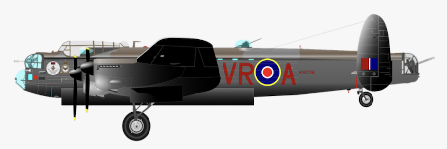

The Allied Bombing Missions of World War Two
First, the mission timeline and geography is presented, followed by an overview of the most dominant bomber planes. The final section focuses on the contribution of Australia's RAAF to the bombing effort.

Timeline of bombing missions
The first allied bombing operations began on Europe's Western Front in September 1939, during which the RAF targeted German vessels and infrastructure networks.
From 1940 to 1941, the war spread throughout Europe, with strategic bombing over Belgium, the Netherlands and France. Several operations also took place in the Mediterranean and parts of East Africa.
Following the Pearl Harbour attack on December 7, 1941, the Allied Forces began strategic bombing in the Pacific and China Burma India theatres.
Sustained attacks continued on all fronts until August 1945, culminating in the atomic bombing of Hiroshima on the 6th and Nagasaki on the 9th, which soon resulted in formal surrender of the Axis Powers on September 2, 1945.
The WWII bombers that ruled the skies
B-17 Flying Fortress
The Boeing B-17 Flying Fortress flew 41,497 missions during World War Two - more missions than any other bomber. The B-17 was prevalent from 1942 onwards, undergoing an especially heavy campaign from March 1944 to April 1945.
While the heavy bomber served in almost every theatre of operation, it was mostly based in Great Britain and employed by the US Eighth Air Force to bombard German targets in Europe.
B-24 Liberator
The Consolidated B-24 Liberator flew 38,191 missions, behind only the B-17 in terms of mission count. The B-24 was present from 1942, and supported the B-17 throughout heavy campaigns from 1943 to mid-1945.
The B-24 gained a distinguished record in the European, Pacific, East Africa and Mediterranean theatres. The heavy bomber was the most produced American wartime aircraft, with a longer operating range than the B-17.
B-25 Mitchell
The North American B-25 Mitchell was a medium bomber which flew 16,974 missions in World War Two.
It came into operation in April 1942, and was most prolific in the Pacific theatre of operation. The B-25 was involved in "island-hopping" campaigns and was responsible for sinking many Japanese destroyers and communication links.
B-26 Marauder
The Martin B-26 Marauder flew 11,584 missions, beginning in April 1942 and operating along a similar timeline to the B-25.
While the B-26 was built in parallel to the B-25, it was much faster and difficult to control, with a high rate of mechanical failures. It was flown in the Pacific and European theatres, but the Pacific fleet was replaced later on by the more suited B-25's.
A-20 Havoc
The Douglas A-20 Havoc was a light-bomber, attacker and night-fighter, and flew 11,576 missions from September 1942 onwards. It was very durable and was involved in every theatre of operation.
Vickers Wellington
The Vickers Wellington flew 6,354 missions and was the first bomber to enter World War Two, flying from September 1939 to October 1944. It was a British long-range medium bomber, flown mainly in Europe and the Mediterranean, with peak campaigns in 1940 and 1941.
Lancaster
The Avro Lancaster was a renowned British bomber, used in reconaissance and heavy bombing missions throughout Europe. Its first mission was in November 1940, and it continued to operate almost until the end of the war, clocking 6,291 missions.
P-47 Thunderbolt
The Republic P-47 Thunderbolt was a fighter bomber which flew 4,650 missions, starting in February 1943. It was the largest and heaviest single-fighter built. The P-47's late development led to its primary deployment in th Pacific theatre.
A-26 Invader
The Douglas A-26 Invader flew 4,480 missions, despite not entering the war until relatively late. It flew three missions in November 1943, but operated more heavily in the Pacific from 1945.
The A-26 had a longer range and heavy armament with remote power-driven gun turrets. It required a three-man crew to operate, consisting of a pilot, navigator and bombardier.
P-51 Mustang
The North American P-51 Mustang flew 3,604 missions, the majority occuring between 1944 and mid-1945. The The P-51 was the highest-scoring US fighter in Europe, destroying 4,950 enemy aircraft.
The contribution of the Royal Australian Air Force
The RAAF contributed to 287 of the 168,984 Allied missions of World War Two. The RAAF's missions took place from 1941 to 1942, and occurred mostly in neighbouring South-East Asia, with the exception of a few target missions in Lebanon and Syria.
Cairns was the largest RAAF operating base - it launched 95 missions, targeting various regions of New Guinea and the Bismarck Archipelago. The RAAF had several bases in the Northern Territory, with missions departing from either the Bachelor Field, Darwin or Hughes base, and targeting short-range locations in South-East Asia. The RAAF also used the Port Moresby base to stage local bombing raids in New Guinea.